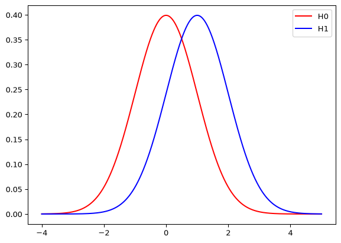
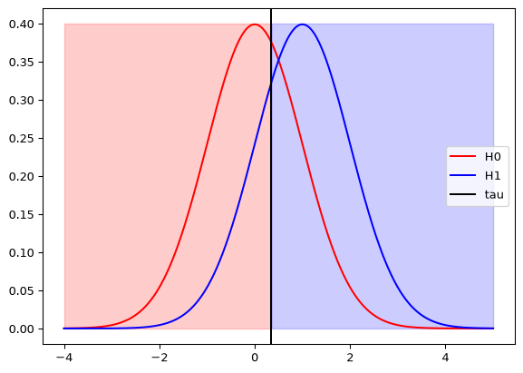
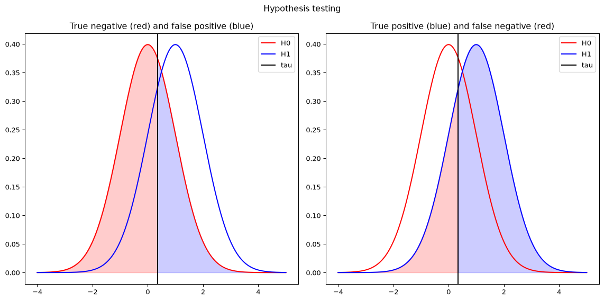
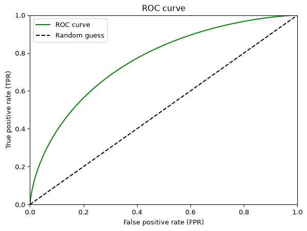
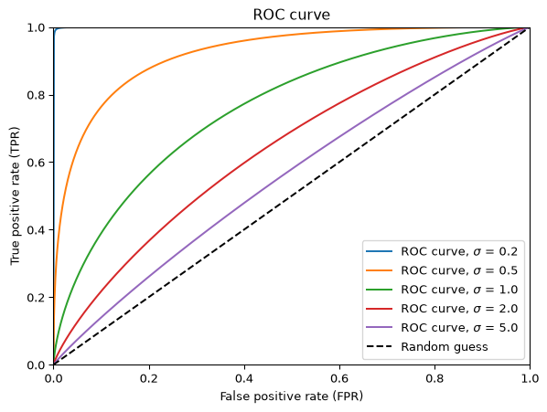
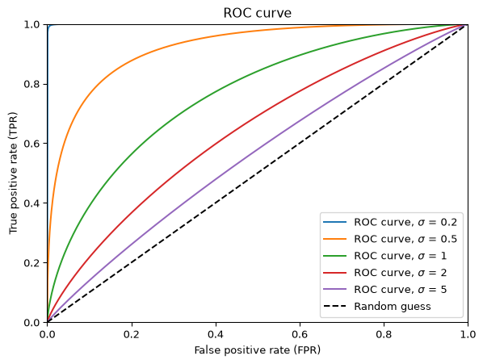
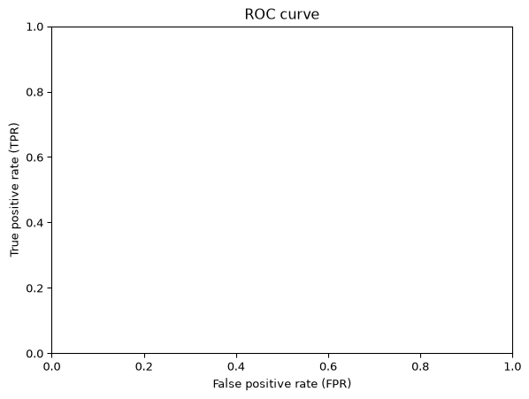

Code
dist_neg = norm(0, 1)
dist_pos = norm(1, 1)
make_hypothesis_distributions_figure(dist_neg, dist_pos)
Applied Data Privacy — Lecture 3
This is the self-study companion to the lecture deck: full narrative + all code, meant to be read and run. For the slide version (code hidden), open the presentation deck.
In the statistical literature, hypothesis testing typically refers to the comparison of two hypotheses: The null hypothesis, \(H_0\), and the alternative hypothesis, \(H_1\). In the CS community, the more common terminology is binarry classification, where the negative hypothesis is compared to the positive one. We will use these two descriptions interchangably.
In this lecture we will focus on the simple setting, where the hypotheses are both distributions of the same family with the same scale and different means. For example, \(\mathbf{H_0}\): \(x \sim \mathcal{N}(\mu_0, \sigma^2)\) (negative) and \(\mathbf{H_1}\): \(x \sim \mathcal{N}(\mu_1, \sigma ^ 2)\) (positive). Throughout this exercise, we assume w.l.o.g. that \(\mu_1 > \mu_0 .\)
dist_neg = norm(0, 1)
dist_pos = norm(1, 1)
make_hypothesis_distributions_figure(dist_neg, dist_pos)
A desicion rule is a function from the domain of the distributions (the reals, in this case) to \(\{0, 1\}\), which given a sampled value guesses if it was sampeled from \(H_0\) or \(H_1\). It might be non-deterministic.
Throughout this lecture we will consider a natural desicion rule - threshold, that is, given a threshold \(\tau\), if \(x < \tau\) we guess it is negative and if \(x > \tau\) we guess it is positive (since these are continous distributions, the probability that \(x=\tau\) is \(0\)).
tau = 0.35
make_threshold_decision_rule_figure(dist_neg, dist_pos, tau)
Any two distributions and a desicion rule, define four regions: * True Positives (elements drawn from \(H_1\) that the desicion rule marked as positive) * False Negative (elements drawn from \(H_1\) that the desicion rule marked as negative) * True Negative (elements drawn from \(H_0\) that the desicion rule marked as negative) * False Positives (elements drawn from \(H_0\) that the desicion rule marked as positive)
make_fpr_tpr_confusion_panels_figure(dist_neg, dist_pos, tau)

Using these notions we can define the key quntities we use: * The probability that an element drawn from \(H_1\) will be marked as positive is the True Positive Ratio (TPR) * The probability that an element drawn from \(H_0\) will be marked as positive is the False Positive Ratio (FPR)
In the case of a threshold desicion rule we have \(~FPR := \underset{X \sim H_0}{\mathbb{P}}(X > \tau)~\) and \(~TPR := \underset{X \sim H_1}{\mathbb{P}}(X > \tau)\).
Naturally, there is a tradeoff between the TPR and FPR. We can increase the TPR by choosing a desiion rule that tends to guess “positive” more frequently, but this will result in a higher FPR and vice versa.
This tradeoff is represented by the ROC plane. Any desicion rule is represents by a point with coordinates (FPR, TPR). The diagonal \(y=x\) is induced by randomly guessing “positive” w.p. \(p\) (which will be equal to FPR and TPR). For any FPR, there is some maximal achievable TPR. The collection of these points is called the ROC curve.
make_analytic_roc_curve_figure(dist_neg, dist_pos)
Of course, this curve depends on \(\mu_{1}-\mu_{0}\) and \(\sigma\).
make_analytic_roc_curves_by_std_figure([0.2, 0.5, 1, 2, 5])

Consider two Binomial random variables: \(H_0 = \text{Bin}(0.5, 5)\) and \(H_1 = \text{Bin}(0.25, 5)\). * What are all the possible decision rules? * Compute the FPR and TPR for all possible decisions * Draw the ROC curve
make_empty_roc_plane_figure()
# You will implement similar functions in the class exercise.ROCDecisionVisualizer(
dist0_family="norm",
dist0_args=(0.0, 1.0),
dist1_family="norm",
dist1_args=(1.0, 1.0),
by_threshold=True,
).embed()This is not limited to Gaussian distributions.
ROCDecisionVisualizer(
dist0_family="uniform",
dist0_args=(0.0, 3.0),
dist1_family="uniform",
dist1_args=(1.0, 3.0),
by_threshold=True,
).embed()It seems like the desicion rule we considered so far is optimal, that is, it achieved the highest TPR for a given FPR, thus laying on the ROC curve. But is it a coincidence, and how can we guarantee this property?
The Neyman Pearson lemma provides a simple and elegant answer - all optimal desicion rules are a threshold on the log probability ratio:
Any desicion rule of the form \(D(x) = \begin{cases} P & \ln \left(\frac{f_{1}(x)}{f_{0}(x)} \right) > \tau \\ N & \ln \left(\frac{f_{1}(x)}{f_{0}(x)} \right) < \tau \\ \end{cases}\) for some \(\tau \in \mathbb{R}\) is an optimal desicion rule, where \(f_{i}(x)\) is the pdf of \(x\) under hypothesis \(i\) (if the distributions are not continous, the desicion rule needs to account for the case that the log probability ratio is equal to \(\tau\)).
If the log probability ratio is monotonic in the value \(x\), as is the case with most probability distributions with the same variance and different mean, a threshold on the value is optimal.
We can not present the previous plot, this time controling FPR rather than of \(\tau\).
ROCDecisionVisualizer(
dist0_family="norm",
dist0_args=(0.0, 1.0),
dist1_family="norm",
dist1_args=(1.0, 1.0),
by_threshold=False,
).embed()We recall that we model the privacy threat as an attempt of the attacker to distinguish between two hypotheses, \(H_0\) - the user was not in the dataset, and \(H_1\) - the user was in the dataset. In this case, the two distributions represent the probability of the mechanism’s outputs given the dataset.
In our running example, where \(H_0 =\mathcal{N}(\mu_0, \sigma^2)\) and \(H_1 = \mathcal{N}(\mu_1, \sigma ^ 2)\), this corresponds to a setting where the values of the dataset without the user is \(0\), its value with the user is \(1\), and the mechanism releases this value after adding noise sampeled from \(x \sim \mathcal{N}(0, \sigma ^ 2)\).
The closer the ROC curve is to the diagonal, the harder it is for the attacker to succeed in its guesses, so a natural privacy definition is to upper bound this curve. The bound can be expressed in many ways. One simple option is using a linear function, such that \(\text{TPR} \le m \cdot \text{FPR} + n\) where \(m\) is the slope and \(n\) is the shift (and its reflected part for the top half).
PrivacyPlot(
sensitivity=1,
std=1.5,
distribution_types=[norm],
).embed()Did we just develope a new (and more natural)privacy definition than Differential privacy?
Apperently no. The tradeoff function is bounded by the lines \(\text{TPR} \le m \cdot \text{FPR} + n\) iff it is \(\ln(m), n)\)-DP. Isn’t that a miracle?
Let’s use this insight to reason about the privacy of several other noise addition mechanisms:
PrivacyPlot(
sensitivity=1,
std=1.5,
distribution_types=[norm, laplace, uniform],
).embed()